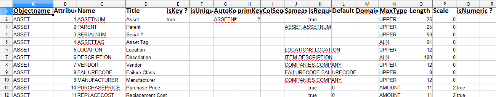
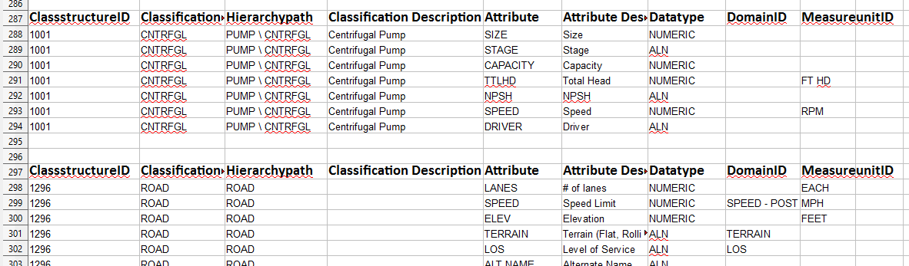
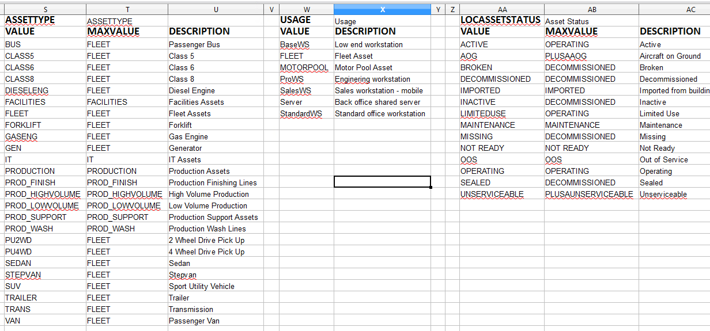
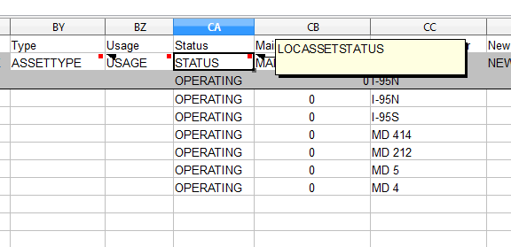
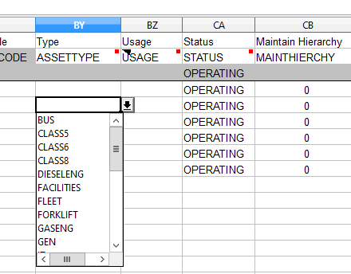
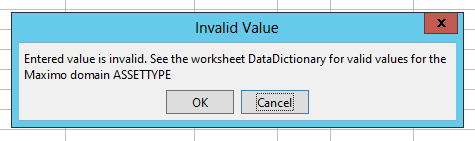

Data Validation and the DataDictionary
The previous chapters explained how you can download empty Excel templates (see
chapters 6.1.2 Download a XLS Template , 7.2 Download a Template with specification
data and 8.2 Download a Template for the extended import on more information on
how to download templates for the Simple, Specification and Extended Import).
It is also possible to download the current search result of your application either as
a simple list or with specification data or child objects. See the chapters 6.1.3
Download a Search Result as an Excel Template , 7.3 Download a search result with
specification data and 8.3 Download a search result with extended data for further
information on this functionality).
All of those generated Excel files contain a worksheet called "DataDictionary". This worksheet contains the following information (if you have the EAM Datamanagement Tools V4 Rev. 3330 or later installed):
- Detailed information about all the affected Maximo objects
- Detailed information about all affected Classifications
- Information abo ut referenced ALN, SYNONYM and NUMERIC domains including the defined values from maximo.
Maximo Object Information
For every Maximo object which is part of the data, detailed information about the
attributes is included in the worksheet. For a simple template or a Simple Searchresult
download the main object of the applications is included.
If the excel file is an extended template or extended search result download, then the
child objects are also included in the "DataDictionary".
The "DataDictionary" is displayed as a table with the following columns:

Illustration 37: Data Dictionary for the object attribute information
| Column | Explanation |
|---|---|
| Objectname | Name of the Maximo Object |
| Attribute Number | A unique attribute number |
| Name | The name attribute |
| Title | the attribute title |
| isKey ? | Contains "true" if the attribtue is part of the primary key |
| isUniqueIDName ? | Contains "true" if the attribute is the unique ID fo the object |
| AutoKeyName | The name of the autokey |
| primKeyColSeq. | The sequence of this attribute in the primary key |
| SameasObject.SameasAttribute | Sameas Information for the attribute |
| isRequired ? | Contains "true" if the attribute is required |
| Default | Contains the default value from the database configuration |
| DomainID | Contains the DomainID for this attribute |
| MaxType | Contains the Maximo Datatype for the attribute |
| Length | The maximum length of the attribute (useful for ALN,UPPER) |
| Scale | the scale for DECIMAL, FLOAT, AMOUNT, ... datatypes |
| isNumeric ? | Contains "true" if the attribute / Datatype is numeric |
The first object is always the main object of the application. The information for other objects (child objects for the extended template or search result) follow below the main object.
Maximo Classifications / Specifications
Information about all the affected classifications is also included in the "DataDictionary" and is displayed below the objects. This information is only available if you create a specification template or execute a search result download with specification data.
The following screenshot shows a sample output:
 Illustration 38: Specification attributes in the data dictionary worksheet
The output contains the following data:
| Column | Explanation |
|---|---|
| ClassstructureID | The CLASSSTRUCTUREID of the classification |
| ClassificationID | The CLASSIFICATIONID of the classification |
| Hierarcypath | The hierarchypath of the classification |
| Classification Description | The description for the classification |
| Attribute | The classification attribtue name |
| Attribute Description | The description for the classification/specification attribute |
| Datatype | The datatype for the attribute |
| DomainID | The Domain ID for the attribute |
| MeasureunitID | The unique MeasureunitID for this attribute |
The specifications are printed in the order they are encountered during data export or specified in the dialog during template generation.
Domains and Domain Values
The final group of objects which are included in the new "DataDictionary" are the used
ALN, SYNONYM and NUMERIC domains and their configured domain values.
The "DataDictionary" for objects and specifications contains a column DomainID (see
previous chapters). If the domain is a ALN or NUMERIC domain, then the value and
description are included in the "DataDictionary". For SYNONYM domains the internal
value (MAXVALUE) is included in the "DataDictionary".
The domains are printed starting from column S (right to the main object information)
in the order in which they are encountered during data export or template generation.
The following screenshot shows the first few domains of the ASSET object with their
values.
 Illustration 39: Domain information in the "DataDictionary"
Data validation in Excel
The information from the "DataDictionary" worksheet is used for data validation in the other worksheets. This is a new feature which is available starting with EAM Datamanagement Tools V4 Rev 3330.
If the attribute has a domain in the database configuration (and in the data dictionary), then the name of the domain is inserted as a cell comment in the second row of the worksheet (the cell with the attribute name).
The following screenshot shows a part of a search result download from the ASSET application. Every attribute with a domain has a cell comment (recognizable by the red dot in the cell) which contains the name of the domain (ASSET.STATUS only allows values from the domain LOCASSETSTATUS).
 Illustratino 40: Domain name as cell comment
If the domain is a ALN, SYNONYM or NUMERIC domain, then the valid values are also included in the "DataDictionary" worksheet.
For all columns where there is a ALN, SYNONYM or NUMERIC domain there is also an Excel Data Validation configured and you can select a valid value from a drop down box in the excel cell. This data validation references the valid domain values from the datadictionary.
If you delete the "DataDictionary" sheet you should also remove the data validations from all of your cells. Failing to do so will result in invalid data validation formulas and invalid references. If you choose not to generate the "DataDictionary" worksheet (see chapter 12.1 Configuration Options for the EAM Importer) then the data validation is not created since the "DataDictionary" worksheet is a prerequisite for the data validation.
If domain values are changed/added/deleted the datadictionary does not change automatically. You have to change the domain manually.
 Illustration 41: Drop-down list to select a valid value for an attribute with a domain
If you enter a value which is not a valid domain value, then Excel will display the following warning message:
 Illustration 42: Warning message if you enter a value which is not a valid domain value
If you select "OK" your entered value is stored in the cell despite being not a valid domain value. If you select "Cancel" the previous value is restored.